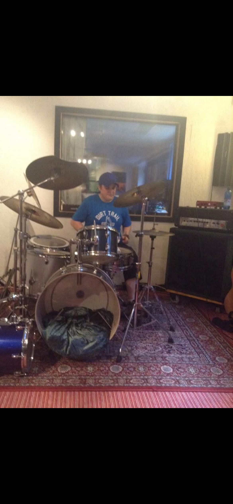

Toner fra hjertet

Jeg hedder Louise og har hele mit liv holdt meget af musik. Jeg spiller selv klaver, trommer og bas. Derfor er musikken min helt store terapi i hverdagen. Den flytter fokus og giver ro, da jeg har ADHD og Asperger syndrom, hvor hverdagen til tider kan være udfordrende.
Mine Instrumenter & Erfaring
Jeg har i mange år spillet trommer og har nu knap 20 års erfaring – meget gennem gehør og som selvlært. At spille er for mig en stor frihed og en måde at finde sit eget jeg på. Jeg spiller også bas på begynderniveau og har en Ibanez SR300E i blå, 4-strenget. Derudover har jeg et elklaver og et Roland trommesæt.
"Livet som musiker - bærer du i dit indre - for evigt"